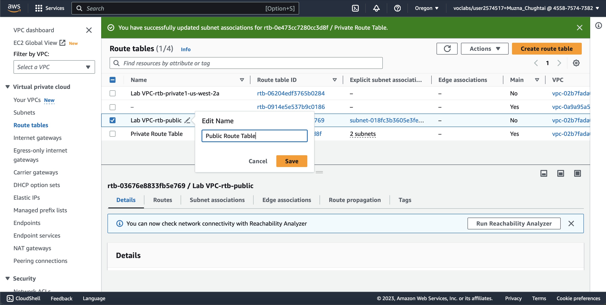

Building a VPC and Launching a Web Server
Task 1: Creating a VPC
Firstly, we use the VPC Wizard to create a VPC, an internet gateway, and two subnets in a single Availability Zone. An internet gateway is a VPC component that allows communication between instances in your VPC and the internet.
After creating a VPC, We can add subnets. Each subnet resides entirely within one Availability Zone and cannot span zones. If a subnet's traffic is routed to an internet gateway, the subnet is known as a public subnet. If a subnet does not have a route to the internet gateway, the subnet is known as a private subnet. The wizard also creates a NAT gateway, which is used to provide internet connectivity to EC2 instances in private subnets.Following are the steps to create VPC:
- In the AWS Management Console, select the Services menu, and then select VPC under Networking & Content Delivery.
- In the left navigation menu, choose Elastic IPs.
- Choose Allocate Elastic IP address.
- On the Allocate Elastic IP address page, leave the default settings, and choose Allocate.
- In the left navigation menu, choose VPC Dashboard.
- Choose Launch VPC Wizard.
- For Step 1: Select a VPC Configuration, choose VPC with Public and Private Subnets.
- Choose Select.
- For Step 2: VPC with Public and Private Subnets, configure the following options:
- Enter VPC name
- Select Availability zones
- Public subnet name: Enter Public Subnet 1
- Availability Zone: From the dropdown list, choose the first Availability Zone (the same as used above).
- Private subnet name: Enter Private Subnet 1
- Elastic IP Allocation ID: Select the box, and select the displayed IP address.
- Choose Create VPC.
- On the VPC Successfully Created page, choose OK.
Task 2: Creating additional Subnets:
Secondly, we will create two additional subnets in a second Availability Zone. This option is useful for creating resources in multiple Availability Zones to provide high availability.
Following are the steps to create additional Subnets:
- choose Subnets.
- To configure the second public subnet, choose Create subnet and configure the following options:
- Choose VPC id
- Subnet name: Enter Public Subnet 2
- Availability Zone: From the dropdown list, choose the second Availability Zone.
- IPv4 CIDR block: Enter 10.0.2.0/24
- Choose Create subnet.
Task 3: Creating a route table:
Now we configure the private subnets to route internet-bound traffic to the NAT gateway so that resources in the private subnet are able to connect to the internet while still keeping the resources private. To do this, we configure a route table.
Recall that a route table contains a set of rules, called routes, that are used to determine where network traffic is directed. Each subnet in a VPC must be associated with a route table; the route table controls routing for the subnet.

- choose Route Tables.
- Select the check box for the route table with Yes in the Main column and Lab VPC in the VPC column. (Expand the VPC column if necessary to view the VPC name.)
- choose the Routes tab.
Recall that Destination 0.0.0.0/0 is set to Target nat-xxxxxxxx. This means that traffic destined for the internet (0.0.0.0/0) will be sent to the NAT gateway. The NAT gateway will then forward the traffic to the internet. This route table is therefore being used to route traffic from private subnets.
- In the Name column for this route table, choose the pencil , enter the Private Route Table and then choose Save.
Task 4: Associate the subnets & add routes
- choose the Subnet associations tab
- Under Subnets without explicit associations, choose Edit subnet associations.
- Select the check boxes for both Private Subnet 1 and Private Subnet 2.
- Choose Save associations. You now configure the route table that is used by the public subnets.
- Select the check box for the route table with No in the Main column and Lab VPC in the VPC column, and clear the check boxes for any other route tables.
- In the Name column for this route table, choose the pencil , enter the Public Route Table and then choose Save.
- choose the Routes tab.
- Choose the Subnet associations tab.
- In the Subnets without explicit associations section, choose Edit subnet associations.
- Select the check boxes for both Public Subnet 1 and Public Subnet 2.
- Choose Save associations.
Tasks 5: Create a VPC security group
In this task, we create a VPC security group, which acts as a virtual firewall for our instance. When you launch an instance, we associate one or more security groups with the instance. we can add rules to each security group that allow traffic to or from its associated instances.
- choose Security Groups.
- Choose Create security group.
- Configure the security group with the following options:
- Security group name: Enter Web Security Group
- Description: Enter Enable HTTP access
- Choose VPC.
- Choose Create security group.
- Choose the Inbound rules tab.
- Choose Edit inbound rules
- Choose Add rule.
- Configure the following options:
- Type: Choose HTTP.
- Source: Choose Anywhere.
- Description: Enter Permit web requests
Tasks 6: Launch a web server
Lastly, we launch an EC2 instance into the new VPC. we configure the instance to act as a web server.
- In the AWS Management Console, select the Services menu, and then select EC2 under Compute.
- Choose Launch instances First, you choose an Amazon Machine Image (AMI), which contains the desired operating system.
- For Step 1: Choose an Amazon Machine Image (AMI), choose Select for Amazon Linux 2 AMI (HVM) - Kernel 5.10, SSD Volume Type. The instance type defines the hardware resources assigned to the instance.
- For Step 2: Choose an Instance Type, choose the check box for t2.micro.
- Choose Next: Configure Instance Details You now configure the instance to launch in a public subnet of the new VPC.
- For Step 3: Configure Instance Details, configure the following settings:
- Choose Network
- Subnet: Choose Public Subnet 2. (Be careful not to choose the private subnet.)
- Auto-assign Public IP: Choose Enable.
- Expand the Advanced Details section.
- Customise the User data with following code:
This script runs automatically when the instance launches for the first time. The script loads and configures a PHP web application.
- Choose Next: Add Storage
- For Step 4: Add Storage, you use the default settings for storage. Choose Next: Add Tags to move onto the next step. Tags can be used to identify resources. You use a tag to assign a name to the instance.
- For Step 5: Add Tags, choose Add Tag
- Configure the following options:
- Key: Enter Name
- Value: Enter Web Server 1
- Choose Next: Configure Security Group You configure the instance to use the Web Security Group that you created earlier.
- For Step 6: Configure Security Group, Assign a security group, Select an existing security group.
- Select the check box for the vockey | RSA security group. This is the security group that you created in the previous task. It permits HTTP access to the instance.
- Choose Review and Launch
- When prompted with a warning that you will not be able to connect to the instance through port 22, choose Continue
- For Step 7: Review Instance Launch, review the instance information, and choose Launch
- In the Select an existing key pair or create a new key pair window, select the check box next to I acknowledge that I have access to the corresponding private key file, and that without this file, I won't be able to log into my instance.
- Choose Launch Instances
- Choose View Instances
- Wait until the Web Server 1 shows 2/2 checks passed in the Status check column. This may take a few minutes. To update the page, choose refresh at the top of the page. You now connect to the web server running on the EC2 instance.
- Select the check box for the instance, and choose the Details tab. And copy the Public IPv4 DNS value.
- Open a new web browser tab, paste the Public IPv4 DNS value, and press Enter.